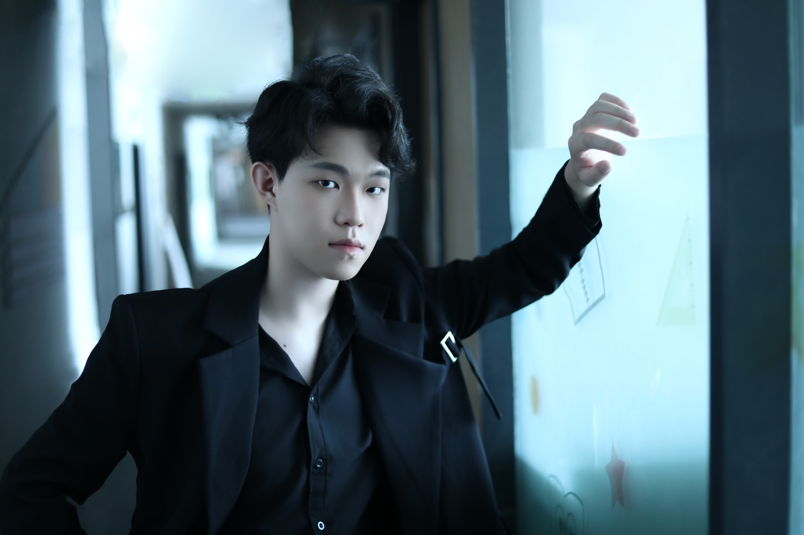

CURRENT
University of Leeds
Digital media studies
DIGITAL MEDIA / ART & DESIGN
Hello, I'm William.
邵新阳
I turn ideas into images, interfaces
and interactive experiences.

01 / ABOUT ME
A digital media creator with a background in art, a hands-on approach to technology, and an interest in how people interact.
I studied Digital Media Art at Qilu University of Technology and am now studying digital media at the University of Leeds. My practice spans sensor-based installations, game environments, real-time visuals and UI design.
Beyond making things, I enjoy bringing people together — through student leadership, collaborative projects and public speaking.
Explore my experience02 / MY JOURNEY
The experiences that shape
how I think and create.
CURRENT
Digital media studies
2022 — 2026
Undergraduate study · Digital Media Art
GPA 3.93 · Top 10% of the major
SUMMER LEARNING
Summer school · Final assessment winner
TEA Community summer camp · Outstanding participant
Served as a university student union department head and class representative. Helped plan and organise a joint event involving eight universities in Jinan.
Key speaker at the faculty student union's annual review meeting, with experience in university–industry activities and cross-disciplinary teamwork.
TouchDesigner / Unreal Engine / Blender / Figma / Photoshop / Premiere Pro
03 / SELECTED WORK

FEATURED / DIGITAL ART
数字漫游：塔影新生
A traditional architectural form reimagined through particles, light and interaction. An exploration of cultural imagery through digital media.
PARTICLES / PROJECTION / INTERACTIONALSO IN MY PRACTICE
Sensor-based sculpture · Wuxia game environments · App UI design
04 / LEARNING IN PUBLIC
Experiments, workshop outcomes and reflections from my digital media studies.